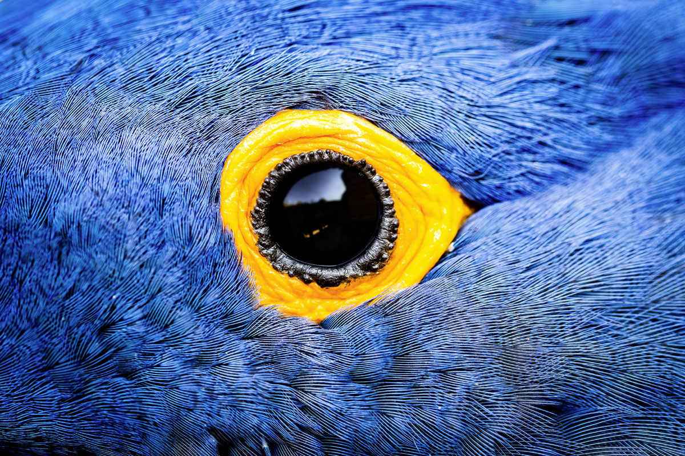

ОДИН КАДР: БРАЗИЛИЯ

Яркое оперение — отличный камуфляж для бразильских тропиков, с их красочными цветами и фруктами, но гиацинтовым ара броский наряд сослужил плохую службу. Эти птицы — самые большие попугаи (длина с хвостом порядка 100 см) — очень общительны и умеют имитировать человеческую речь. Живут они около 50 лет. В XX веке ара массово вывозили в Европу для продажи, поэтому численность популяции резко сократилась. В наши дни, несмотря на жесткие меры борьбы, общемировой оборот от незаконной торговли животными и растениями достигает 10 млрд долларов в год. Сейчас в Бразилии насчитывается всего около 5000 гиацинтовых ара.
Фото: КРИСТОФ КУРТО / NPL / LEGION-MEDIA